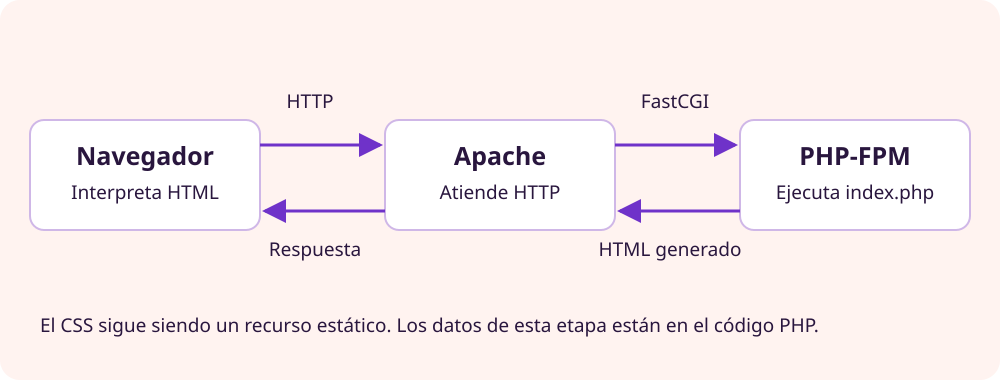

Portal estático
El contenido está preparado en un archivo HTML. Cambiarlo exige editar ese contenido.
AEA2 · Ejecución en servidor
De servir archivos HTML a generar la respuesta en el servidor.
En el primer encargo, Apache HTTP Server lee los archivos HTML y los envía al navegador. La clasificación y las actividades están escritas en esos documentos. Ahora Punto de Juego quiere generar su listado de actividades a partir de una lista de datos, sin escribir a mano el HTML de cada una.
El contenido está preparado en un archivo HTML. Cambiarlo exige editar ese contenido.
El servidor ejecuta un programa que construye el HTML utilizando datos y reglas.
Idea clave
Dinámico no significa animado ni implica tener una base de datos. En esta entrega, PHP generará la página con una lista definida en el propio código. MariaDB llegará cuando necesitemos persistencia.
Apache HTTP Server ya recibe las peticiones del navegador y sirve HTML, CSS e imágenes. Para ejecutar un archivo PHP, necesitamos añadir un intérprete y decidir dónde se ejecutará.
La diferencia principal
Podemos ejecutar PHP dentro de los procesos de Apache mediante un módulo, o utilizar un servicio separado, PHP-FPM, al que Apache encarga la ejecución. Las dos opciones pueden producir la misma página HTML.
Instalamos mod_php, un módulo que incorpora el intérprete PHP a los procesos de Apache.
Navegador
↓ HTTP
Apache [mod_php ejecuta PHP]
↓
Respuesta HTMLNo hay un servicio PHP-FPM atendiendo estas peticiones: el código se ejecuta dentro de Apache.
Instalamos PHP-FPM, un servicio separado que gestiona los procesos encargados de ejecutar PHP.
Navegador
↓ HTTP
Apache → PHP-FPM ejecuta PHP
← HTML generado
↓
Respuesta HTMLApache y PHP-FPM son dos servicios distintos. Pueden ejecutarse en el mismo ordenador; separarlos no exige otra máquina.
| Pregunta | mod_php | PHP-FPM |
|---|---|---|
| ¿Dónde se ejecuta PHP? | Dentro de los procesos de Apache. | En procesos separados gestionados por PHP-FPM. |
| ¿Hay un servicio FPM independiente? | No es necesario. | Sí. |
| ¿Cómo obtiene Apache el resultado? | Mediante su módulo PHP. | Se comunica con FPM y recibe el resultado. |
| ¿Necesitamos instalar las dos opciones? | No. Debemos elegir y configurar una integración para atender las peticiones PHP de este proyecto. | |
En este encargo
Instalaremos un servicio separado de Apache que ejecutará PHP. Apache seguirá atendiendo las peticiones HTTP y le encargará la ejecución a PHP-FPM. No utilizaremos mod_php.
Esto no significa que Apache no necesite módulos: utiliza proxy y proxy_fcgi para comunicarse con PHP-FPM. Estos módulos no interpretan PHP; permiten que Apache solicite el trabajo a otro servicio.

index.php mediante HTTP.El navegador no necesita PHP instalado y no se conecta directamente a PHP-FPM. En una configuración correcta recibe el HTML generado, no el programa PHP original.
Define cómo el servidor web encarga la ejecución y recibe el resultado del proceso de aplicación. En nuestro caso, es el protocolo que utiliza Apache para hablar con PHP-FPM.
Es el punto por el que se comunican los procesos. Puede ser un socket Unix local o una conexión TCP identificada mediante dirección IP y puerto.
/run/php/php8.3-fpm.sock. Es una ruta especial de comunicación local, no una página web. El nombre depende de la versión y de la distribución.127.0.0.1:9000, si FPM está configurado para escuchar ahí. No se usa esa dirección como URL HTTP en el navegador.FastCGI define cómo se comunican; el socket proporciona el canal. En nuestro laboratorio mantendremos esta comunicación local, sin publicar PHP-FPM en la red.
El proyecto proporcionado tiene un archivo public/index.php y una hoja CSS. No hay framework, formulario, sesión ni conexión a una base de datos. Es suficiente entender estas piezas:
<?php
$activitats = [
['titol' => 'Tarde de juegos', 'tipus' => 'Encuentro'],
['titol' => 'Liga de demostración', 'tipus' => 'Torneo'],
];
?>Las variables empiezan por $. $activitats contiene una lista de elementos; cada uno tiene las claves titol y tipus. Sus nombres son identificadores del programa: no hace falta traducirlos para que el contenido visible esté en español.
<?php foreach ($activitats as $activitat): ?>
<article>
<h2><?= h($activitat['titol']) ?></h2>
<p><?= h($activitat['tipus']) ?></p>
</article>
<?php endforeach; ?>foreach recorre la lista. Por cada actividad genera un bloque HTML. <?= ... ?> escribe el resultado de una expresión. Al añadir un elemento a la lista, aparece otro bloque sin duplicar su estructura HTML.
function h(string $text): string {
return htmlspecialchars($text, ENT_QUOTES, 'UTF-8');
}La función h() convierte caracteres con significado en HTML para mostrarlos como texto. Por ejemplo, < no debería interpretarse como el comienzo de una etiqueta si forma parte del título de una actividad. Este escapado es para texto en HTML y atributos entre comillas; no es una solución universal para JavaScript, URLs o consultas SQL.
<p>Respuesta generada en el servidor: <?= date('H:i:s') ?></p>date() devuelve una hora según la configuración del servidor. Espera unos segundos y recarga sin caché: la hora permite observar que se ha generado una nueva respuesta. No es un reloj actualizado automáticamente en el navegador ni prueba por sí sola toda la configuración.
No basta con cambiar la extensión de HTML a PHP. En nuestra opción debemos preparar estas piezas, que tienen funciones diferentes:
Es el servicio separado al que Apache encarga las peticiones PHP. Debemos comprobar su funcionamiento y la comunicación con Apache.
Permite ejecutar PHP sin Apache: por ejemplo, php programa.php. Lo usaremos como herramienta de apoyo para comprobar la versión y la sintaxis.
PHP CLI no sustituye a PHP-FPM. Son formas de ejecutar PHP en contextos diferentes. La integración Apache–PHP es la configuración que conecta el servidor web con el ejecutor elegido, no un tercer intérprete.
| Componente | Qué debes identificar | Qué demuestra su comprobación |
|---|---|---|
| Apache HTTP Server | Servicio, sitio configurado, raíz documental y logs. | Que HTTP llega al servidor y a los archivos previstos. |
| PHP CLI | Intérprete utilizado desde el terminal. | php -v muestra esa versión; php -l comprueba sintaxis. No prueban la integración web. |
| PHP-FPM | Versión, servicio, configuración y punto de escucha. | Que el proceso de ejecución está disponible para Apache. |
| Módulos de comunicación de Apache | proxy y proxy_fcgi, habilitados según la distribución. | Que Apache puede comunicarse mediante FastCGI; no demuestra todavía que FPM sea accesible. |
| Configuración de integración | Qué peticiones pasan a FPM y qué socket utiliza Apache para comunicarse con él. | Que una petición web llega al servicio PHP correcto y devuelve HTML generado. |
En Ubuntu y Fedora cambian los paquetes, servicios y rutas. Antes de actuar, averigua qué tienes instalado y qué configuración está activa. No mezcles instrucciones de diferentes versiones ni habilites simultáneamente dos manejadores sin comprender cuál responde.
CLI y web son entornos distintos
Que funcione php -v no significa que Apache ejecute PHP. Incluso pueden utilizar distintas versiones o configuraciones. La comprobación decisiva se realiza solicitando la página por HTTP y revisando el resultado y los registros.
Si conviven index.html e index.php, la configuración del documento inicial puede hacer que sigas viendo el HTML. Solicita primero index.php explícitamente y comprueba después qué archivo sirve la URL del directorio.
El ZIP contiene una carpeta public/. Publica su contenido o configura esa carpeta como raíz documental de esta versión; mantén el README y la documentación fuera de lo que necesitas servir. Conserva la versión estática para comparar y poder volver a ella.
index.php desplegado mediante Apache.foreach ni el bloque PHP original.En el terminal puedes usar php -l public/index.php desde la carpeta del código para comprobar su sintaxis. Esta comprobación complementa la prueba HTTP, no la sustituye.
| Síntoma | Qué investigar |
|---|---|
| Se descarga el PHP o se ve su código. | El archivo no está pasando por el manejador correcto. Retira ese acceso hasta corregirlo: el código fuente no debe exponerse. |
| Se sigue mostrando la página estática. | URL, copia publicada, orden de documentos iniciales y caché. |
| HTML sin estilos. | Ruta y estado HTTP del CSS; no presupongas un fallo de PHP. |
| 500, 502, 503 o página vacía. | Error de programa, servicio FPM, socket o integración. El estado no determina por sí solo la causa: consulta los registros. |
| La hora no cambia. | Espera, desactiva caché y comprueba que recibes la versión y el servidor previstos. |
No hace falta publicar un phpinfo() completo para esta prueba. Expone detalles del entorno que no necesitas mostrar al cliente.
Ahora el servidor puede generar una página. Los datos siguen definidos en el código: cambiar una actividad exige editarlo y desplegar el cambio. Todavía no hemos creado almacenamiento de inscripciones ni resultados.
El siguiente paso será incorporar una base de datos. Antes debes poder explicar el recorrido navegador → Apache → PHP-FPM → HTML y demostrar que los estilos siguen sirviéndose como un recurso estático.
Abrir el encargo 2 · Portal dinámico con PHP